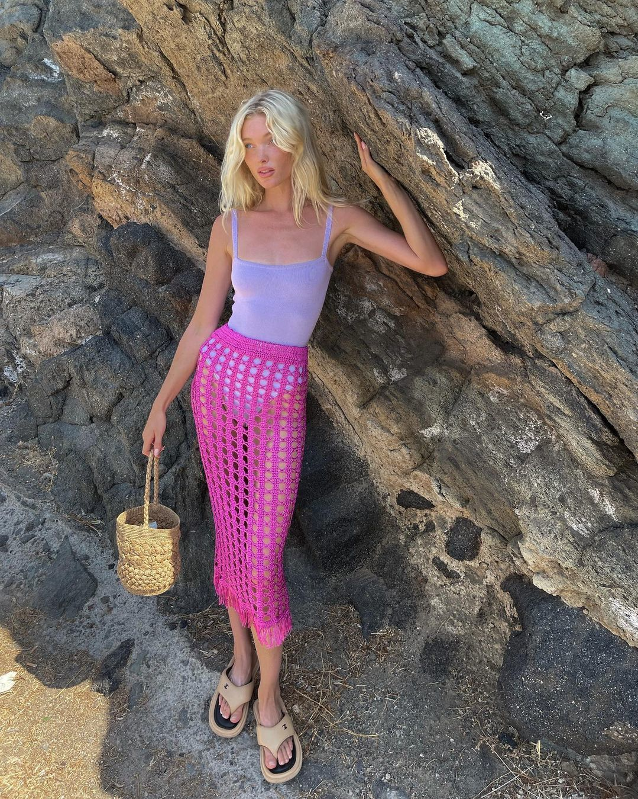
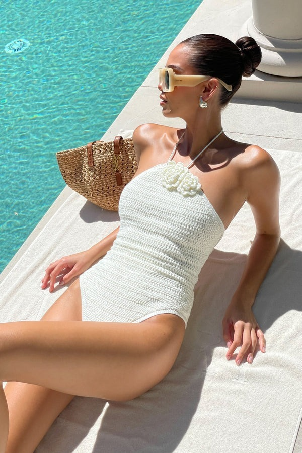
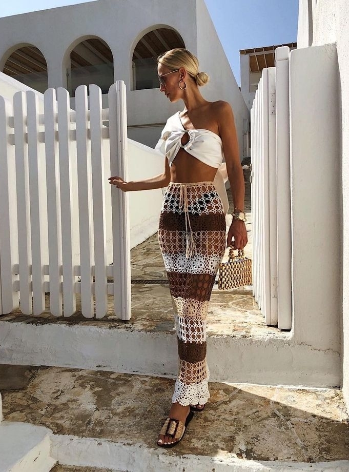
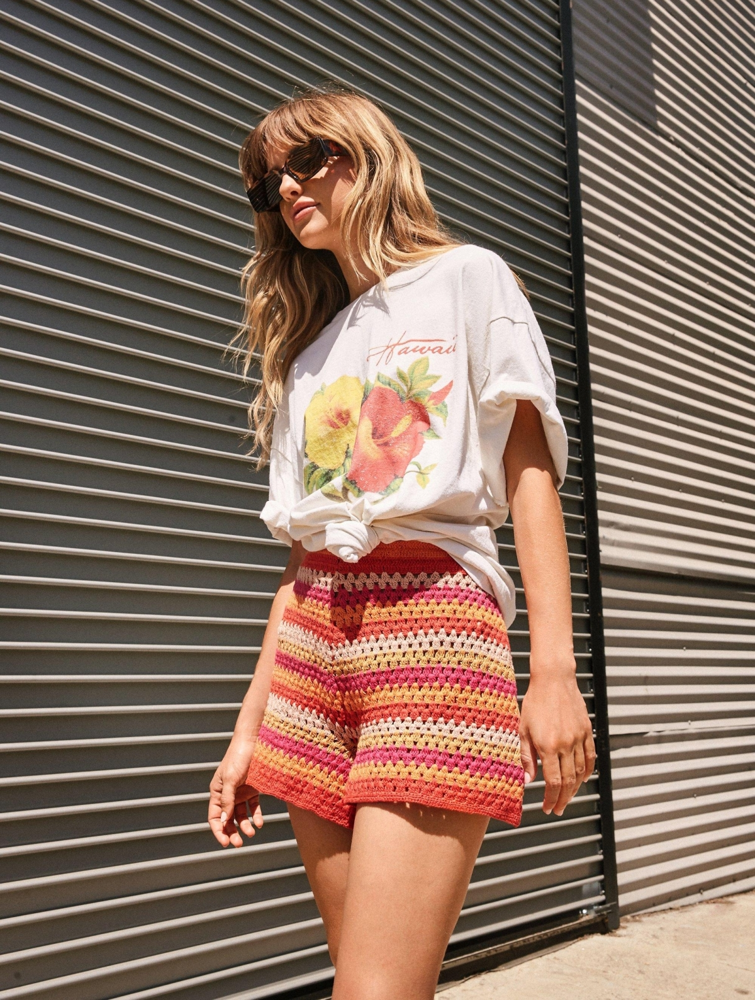

Phối chân váy đan móc với áo tắm là cách mặc vừa tôn dáng vừa thể hiện gu thẩm mỹ tinh tế.
Đan móc là một trong những xu hướng hot của mùa hè năm nay, được nhiều sao Việt như Tóc Tiên, Cao Thái Hà, Khánh Linh yêu thích. Theo WWW, các thiết kế đan móc dễ sử dụng, tiện lợi vì dùng được trong mọi thời tiết và nhiều hoàn cảnh. Khi đi chơi biển, bạn có thể chọn một chân váy đan móc màu nổi diện cùng áo bơi và dép xỏ ngón, tạo thành một bộ cánh bắt mắt. Ảnh: Instagram Elsa Hosk
Áo bơi liền thân kiểu cổ yếm thích hợp với những cô gái ưa kín đáo, nữ tính và hoài cổ. Để tăng vẻ thời trang, hãy chọn túi cói, kính mắt retro và bông tai kim loại. Ảnh: Pinterest
Những cô gái tự tin vào hình thể hãy thử áo lệch vai dáng ngắn và chân váy, hoàn thiện bằng dép cói và túi kết hạt gỗ. Trang phục phù hợp với kỳ nghỉ, dạo phố. Ảnh: Pinterest
Bạn còn có thể sử dụng túi và mũ đan móc làm điểm nhấn cho bộ quần áo cotton hay linen khi đi nghỉ mát, gặp gỡ bạn bè. Ảnh: Instagram Chiara Ferragni
Theo WWW, nhiều cô gái yêu thích quần đan móc nhưng ngại mặc vì sợ hở. Để khắc phục điều này, bạn nên chọn quần có các mắt đan khít và nhỏ, tránh tạo nhiều khoảng hở, kết hợp áo phông đơn giản. Ảnh: Pinterest